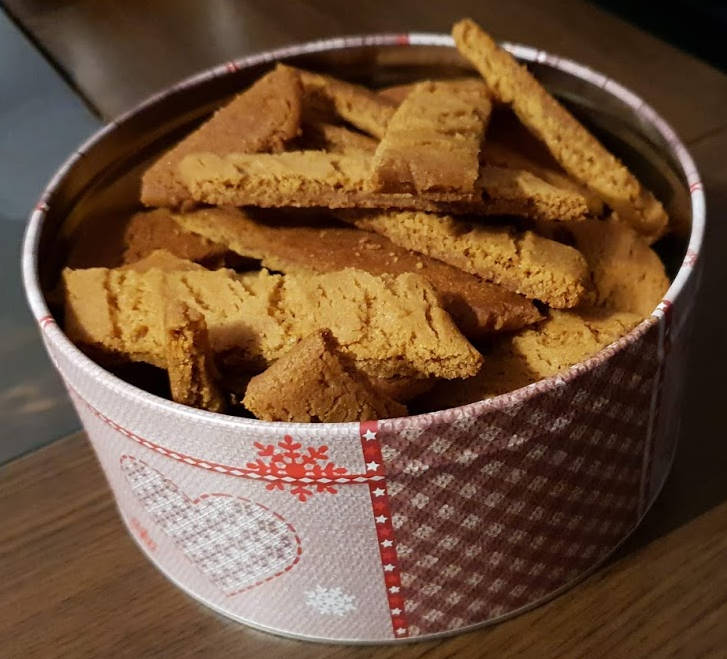

Kolakaker
metadata
Created on 2018-11-30 Last updated on 2020-05-16
Adapted from Kolakaker by Kristine Ilstad @ Det søte liv (2018-11-30)
Estimated time needed: At least 31 minutes. At most 32 minutes.
Ingredients
| 300 | g | hvetemel | ||
| 200 | g | smør | ||
| 200 | g | sukker | ||
| 2 | ts | natron | ||
| 2 | ts | vaniljesukker | ||
| 2 | ss | sirup |
Scaling
Timeline
Directions
⌛ Active time 3 minutes | Passive time 1 minutes
- 200 g smør
- 200 g sukker
Lag smørkrem:
Pisk sammen smør og sukker til smørkrem. Her bruker de fleste oppskriftene hvitt sukker, men jeg tror det blir ekstra godt om man erstatter 50g av den med brunt sukker.
⌛ Active time 1 minutes
- 2 ss sirup
Tilsett sirup:
Bland inn sirup.
⌛ Active time 2 minutes
- 300 g hvetemel
- 2 ts natron
- 2 ts vaniljesukker
Tilsett det tørre:
Bland sammen de tørre ingrediensene. Sikt dem inn i smørkremen. Ikke bruk kjøkkenmaskin til roringen mens du sikter inn.
⌛ Active time 1 minutes
Kna:
Bruk hendene til å kna sammen deigen til den er jevnt.
⌛ Active time 1 minutes
Forvarm ovnen:
Skru ovnen på 175 ℃.
⌛ Active time 5 minutes
Form deigen:
Del deigen i 4 like deler. Rull de ut til pølser som er ca like lange som langsiden til stekeplaten du skal bake de på. Legg bakepapir på en stekeplate, og legg deigpølsene på den. Trykk dem så litt flate. De skal være ca 1 cm tykke, og ca 3 cm brede. I ovnen kommer de til å spre seg bredere, så pass på at deigpølsene ligger langt nok fra hverandre.
⌛ Active time 1 minutes | Passive time 15 minutes
Bak:
Bak deigpølsene midt i ovnen, i ca 15 minutter, til de er gullbrune.
⌛ Active time 2 minutes
Skjær og kjøl:
Rett etter at kakene kommer ut av ovnen, skjær dem på skrå. De skal fortsatt være litt myke når de er varme, men blir hardere når de kjøler seg ned.